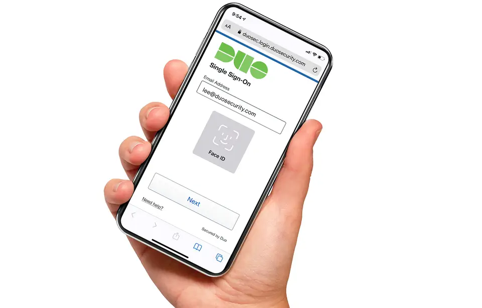

Duo Passwordless Authentication : Fini l’enfer des mots de passe avec cette nouvelle application
L’entreprise informatique Cisco annonce le lancement d’une nouvelle application destinée à remplacer les mots de passe : Duo Passwordless Authentication. Cette dernière a pour but de permettre à ses utilisateurs de s’identifier à leurs différents comptes et appareils sans avoir recours à un mot de passe.
Pour développer cette app, Cisco est parti du constat qu’il est compliqué pour beaucoup de personnes de se souvenir de l’ensemble des mots de passe de ses différents comptes. La logique voudrait d’ailleurs que ces derniers soient particulièrement compliqués, histoire d’éviter d’être facilement piratés, mais dans les faits, nous sommes encore nombreux à utiliser le même mot de passe pour différents comptes ou pire, des combinaisons particulièrement simples du type « motdepasse » ou « 123456 ».
À l’heure actuelle, l’authentification à double facteur permet de sécuriser ses comptes. Elle repose sur l’utilisation d’un mot de passe et la confirmation de son identité via un code reçu par SMS ou par mail. Mais ce système est encore peu utilisé aujourd’hui et, bien qu’il apporte un niveau de sécurité supplémentaire, il n’est pas infaillible.
L’application Duo passwordless authentication utilise un autre système pour protéger et authentifier les utilisateurs : la cryptographie asymétrique.